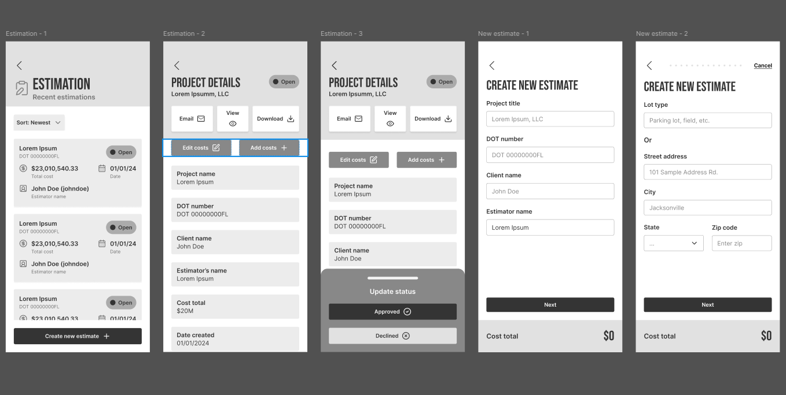
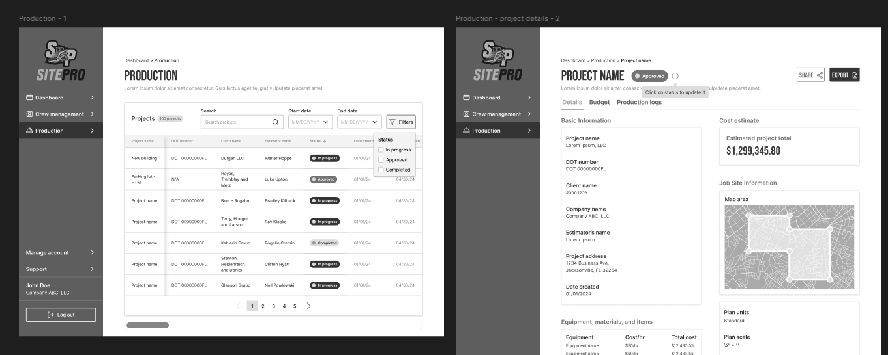
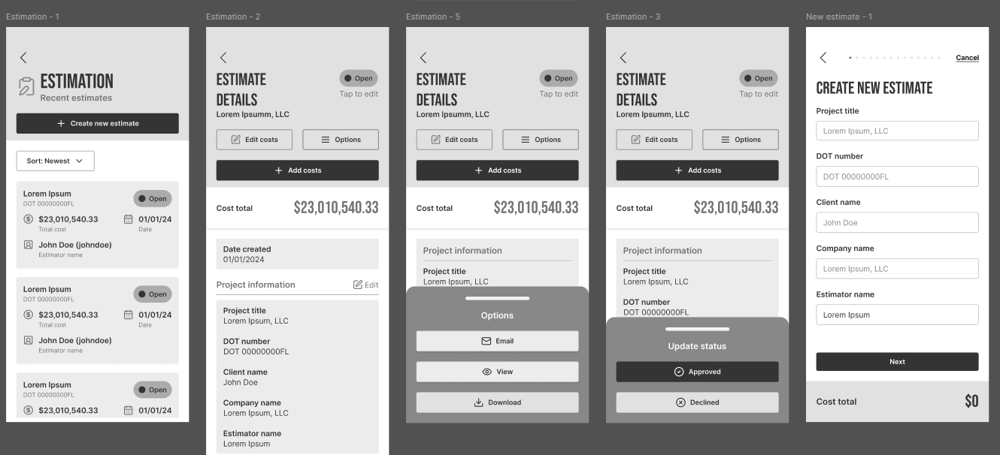
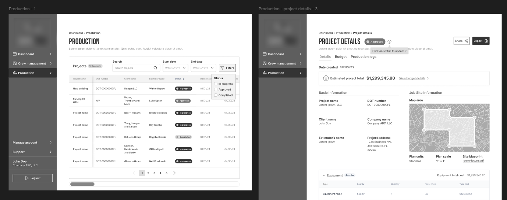
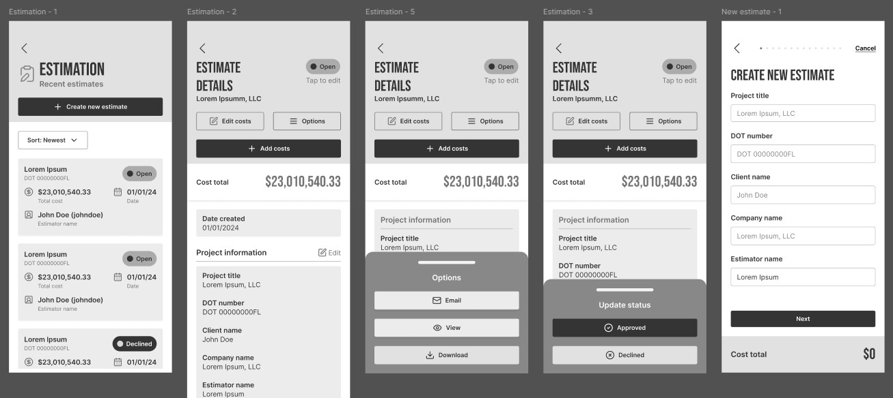
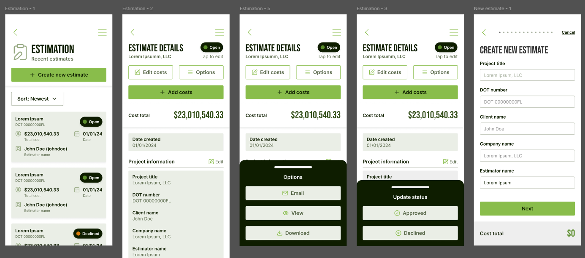
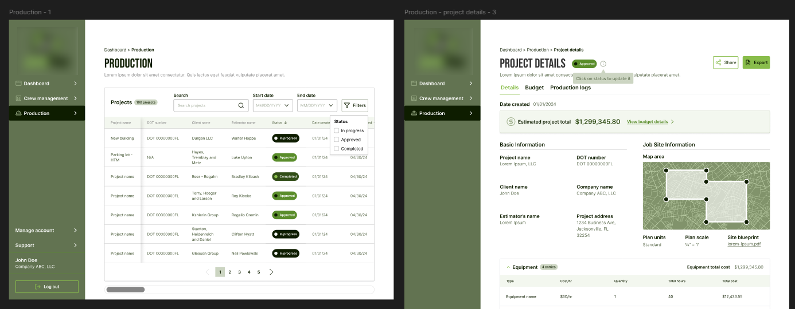

challenges and goals
There were a lot of input fields needed and when you have long forms, things can get very complicated and hard to use. Finding a balance of including all of the setup while keeping things easy to follow was tough.
challenges
- Create a design that was modern, easily digestible, and accessible.
- Many long forms to condense and make less complicated.
goals
- Keep the design modern, engaging, and easy to follow.
- Make information scannable and easy to find.
- Have reusable components to cut down on dev time.
research and planning
There aren't many other platforms out there that are for construction planning, but there were a few to research. It seemed like the main issue was similar to what users face with any type of highly complex platform. Some of the findings were reported by the client.
findings
- Users need quick access to real-time project updates.
- Managing budgets and tracking expenses are pain points.
- Mobile accessibility is critical for on-site supervisors.
- Overcrowded interfaces frustrate users.
key features
- Project planning dashboard
- Crew, materials, and equipment management
- Visualized budget breakdowns
- Logging for crews to track daily work
wireframes
first iteration
This project went through more iterations than any project I've previously worked on. There are a ton of features and the information shown has to be well visualized. The first round was a good start, but needed more polish.
Since the mobile app was first, it started off rougher than the web app did. Not to mention figuring out how to place all the tables and functionality in while keeping it non-cluttered. There's a lot I cannot show yet, but you can glean some of the challenges.
Mobile App
Web App
second iteration
This second version has some small but very impactful changes to the mobile app. to the overall balance was improved, and the location of the buttons were optimized.
The web app got some quality of life changes, with the budgets being in clearer view while giving another option to go directly to the budget detail tab.
Mobile App
Web App
third iteration
Very small change here. Just added more state options to the project status.
Mobile App
design
Luckily, there weren't really many changes needed when moved into design. I fiddled with color placement a bit then settled on the current color palette.
Mobile App
Web App
handoff and takeaways
This is definitely the largest project I've handled to date. I am happy with the outcome so far. Though it is still in development, I am confident it will do well. While we were able to do some testing beforehand, you never know what kind of hidden issues can pop up after launch. During testing, we managed to catch a few small things, but nothing major luckily. I am confident it will be able to scale if needed.